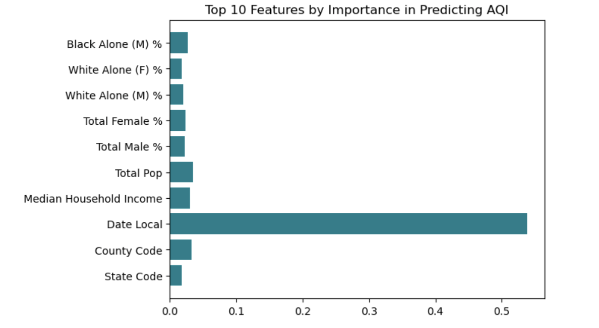
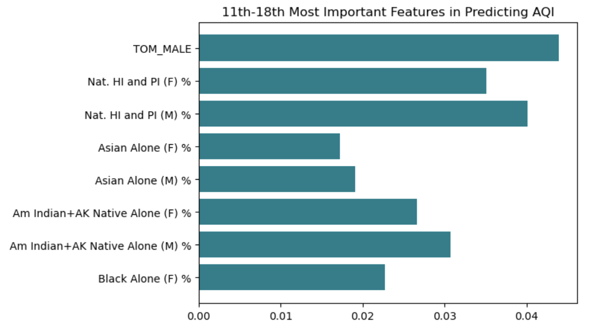
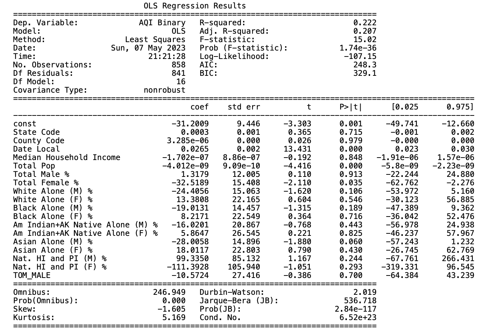

Urban Air Pollution Predicted by Income and Racial Demographics
Final project on determining urban air pollution by income and racial demographics.
Author
Bridget Ulian, Kate Kenny, Mia Tarantola
Published
May 10, 2023
Project Blog Post: Urban Air Pollution Predicted by Income and Racial Demographics
Bridget Ulian, Kate Kenny, and Mia Tarantola
Abstract
Throughout this project, we addressed the problem of urban air pollution and whether it is related to racial and income demographics. We used multiple machine learning models, such as Logistic Regression, Decision Trees, Support Vector Machines, and a few others to see if it is possible to predict air quality based upon racial and income demographics from the U.S. Census. We determined feature importance and then which model was most accurate on the testing data. We found that it is possible to predict air quality with up to 93% accuracy on testing data based on racial and income demographics. Our source code can be found here.
Introduction
We aimed to address the problem of disparities in urban air pollution dependent on racial and income demographics from the U.S. Census. This is important to discuss and solve because if disparities in urban air pollution are found based upon racial and income demographics, it can help determine where resources for decreasing air pollution should go. There have been a few studies that discuss this issue, including one by Environmental Health Perspectives, found here, that quantifies exposure disparities by race/ethnicity and income in the contiguous United States for the six air pollutants that make up the total Air Quality Index (AQI). In the study the researchers found that for each pollutant, the racial or ethnic group with the highest national average exposure was a racial or ethnic minority group. Another, from the American Lung Association (here) discusses the impact of air pollution on premature death, finding that those who live in predominately Black communities are at greater risk of premature death from particle pollution. A study from the Harvard School of Public Health (here) looked at how fine particulate air pollution, otherwise known as PM2.5, affects minority racial groups and low-income populations at higher levels than white populations and higher-income populations. Another study by Columbia and published in the Environmental Health Perspectives journal (here) also looked at PM2.5 and how nonlinear and linear models show the same direction of association between racial/ethnic demographics and PM2.5 levels. A final study we looked at (here) discussed how redlining maps drawn in the 1930s affect air pollution levels (NO2 levels) today, finding that redlinign continues to shape systemic environmental exposure disparities in the U.S. today.
We are looking at slightly different information, looking at both linear and nonlinear models and how they relate to the AQI which takes into account the six air pollutants that the first study discusses, put together into a single index used by the Environmental Protection Agency (EPA). We are taking both racial/ethnic demographic information and income information into account. We are looking at urban air pollution specifically. We want to determine how urban demographics affect the AQI of certain areas to limit the scope of our experiment and see how far racial and ethnic demographics reach in their impact on air pollution. We hope that our research helps state, federal, and local governments determine how to allocate resources towards decerasing air pollution and increasing sustainable choices.
Values Statement
Potential users of our project include government officials, charity groups, lobbyists, citizens in highly polluted or non-polluted areas, or real estate investors. These groups would use our project in significantly different ways. When it comes to government officials, charity groups, and lobbyists, the hope is that decision-makers in power will see disparities in air pollution levels due to demographic makeup problematic. When they observe these disparities based on racial or income demographics, hopefully it informs government officials and other decision-makers on where to allocate resources. Promoting sustainable energy, strictenforcement of the clean air act, and other environmental practices in areas unfairly burdened with bad air pollution could be a positive outcome of our project.
However, our project could also potentially cause harm. When thinking about real estate investments, poor air quality in lower income neighborhoods could be more reason to avoid putting money into these areas. Families looking to move, buy, or rent in new neighborhoods may avoid neighborhoods that have poor air quality; if these neighborhoods are already low-income and mainly inhabited by racial and ethnic minorities, it will perpetuate systemic oppression that these communities already face. This could also be a reason for citizens inhabiting areas with better air quality – more likely to be higher income, higher white population areas – to remain in their neighborhoods and continue investing in their own neighborhoods. This could perpetuate the differences in air quality between lower income and higher income neighborhoods.
Our personal reasons for working on the project include interest in the EPA data on air pollutants as well as a desire to see if bias plays into air pollution data in American urban centers. I personally began reading news articles and studies covering the effect of income and racial demographics on pollution and personally starting in mid high school. Making our own datasets, models, and maps helped us grasp those disparities much more concretely. Finally, there is a hope that our data helps solidify the fact that disparities in air pollution exist dependent on racial/ethnic and class demographics. While it is not necessarily right that numbers, data, and statistics are often required to make policy decisions, it is the current way of life. Decision-makers can hopefully utilize projects like ours to make decisions that help allocate resources in a way that decreases disparities.
Based on this reflection, the world would hopefully be a more equitable, just, joyful, peaceful, and sustainable place based on our technology. With resources allocated towards neighborhoods unfairly suffering from low air quality due to systemic racism and classism, the United States can hopefully take a step towards paying reparations for the historical and current oppression that has compounded on minority – particularly low-income minority – groups.H
Our first step in the process was data cleaning. We had hoped to combine these three data sets into one larger dataset that included air pollution, income, and racial data for each county. We started with the pollution data and dropped any columns that were used for labeling units. (ie. NO2 units: ppm, 03 units, etc). These columns had the same value for all entries and add no additional value. We also dropped the values that are used to directly calculate the AQI, such as ‘NO2 Mean’, as these features would clearly have an impact on AQI beyond racial or income demographics. The environmental data was collected nearly everyday for many years, so we decided to find the average values for each year (per county). We iterated through all of the entries, keeping only the first four character of the date local column (the year). Then we grouped by state, county and date local to get the yearly averages for each county.
We determined a binary AQI label based upon suggestions from the Environmental Protection Agency (EPA). The EPA determines ‘good’ and ‘moderate’ air quality as any AQI from 0-100. Beyond that, any AQI above 100 is considered unhealthy for sensitive groups. That information can be found more in depth here. We labeled ‘good’ AQI as 1 and ‘bad’ AQI as 0.
Next, we incorperated the county income data. This data set only included the fips code, state abbreviation and median household income, so we could left join on fips code and state abbreviation to combine the two data sets.
The last step was to incorporate the racial demographic data. This data set had many columns, but to simplify it, we only considered the individual race columns. Again, we inner joined, to only included counties that appeard in both data sets.
No we have one data set with state, county, pollution, income and racial demographic data.
Feature Importance
One of our first steps in methodology was determining feature importance of each of our features. When determining feature importance, or the effect feature has on the predictive power of the model, we used the built in feature importance of a Random Forest model. This feature importance is calculated by the Mean Decrease in Impurity, or the MDI. For each feature, the random forest algorithm calculates the average decrease in impurity across all decision trees while constructing them. In simple terms, it calculates each feature importance as the sum over the number of splits – in all decision trees – that include the future – proportionally to the number of samples that feature splits. Features which increase the purity of each split (or the likelihood that the particular split will lead towards an outcome of 1 or 0) are tagged as having higher feature importances.
The bar plots of feature importance can be found below:


Something we noted when documenting feature importances was that all features had relatively low importances. Furthermore, some of the features with highest predictive power, like total population and date local, had little to do with racial and income demographics. We will discuss this more later in the results section.
Prediction Models
We looked into a few different scikit models and compared the results in order to determine which models we wanted to use in final processes. When looking at models, we kept in mind that the base rate of our dataset is 86.05%. Any accuracies we determined from models should be higher than that base rate.
Logistic Regression
The logistic regression model resulted in a triaing accuracy of 89.2% and a testing accuracy of 86.05%. The testing accuracy was not higher than the base rate, meaning the logistic regression model was not anble to aid in predicting AQI outcomes.
Linear Regression
We looked at the linear regression model in order test the statistical significance of our different feature variables. The training accuracy was 22.2% and the testing accuracy was 24.7%. We used a p-value of <0.05 a threshold to test for coefficient significance. The table of p-values can be found below.

What this table shows is a few features carrying statistical significance in our model. The features that are statistically significant are Date Local, Total Population, and Total Female Percentage. One feature, Asian Alone (M) %, is close to statistical significance at p value = 0.060, but not below our threshold.
We will discuss the importance of p values in determining analysis more in the results section.
SVM
To determine the best gamma value for our SVC model, we utlized cross validation scores. We tested gamma values within the range of \({6^{-4}}\) to \({6^{4}}\). Our experiment showed that the best gamma value was 0.027777, which resulted in a training accuracy of 93.6% and a testing accuracy of 90.5%. This testing accuracy is above our base rate by 4%.
Decision Tree
Cross validation was used to determine the optimal maximum depth for the decision tree model. The optimal maximum depth was 5, the training accuracy was 93.4% and the testing accuracy was 90.07%. This testing accuracy was higher than our base rate.
Visualization
We then plotted some choropleth maps to compare our predicted data to the actual data. We utilized the GeoPandas package in python in order to map our data. We utilized this dataset, United States Map of Counties, to combine a map of the United States counties with racial/income demographics as well as AQI numbers.
Results
SVC Model Results: Accuracy and Auditing
We decided to use our SVC model for further analysis. The overall accuracy of our model was 90.5%, but we also looked at the positive predictive value. That is the likelihood that a county predicted to have a low risk AQI actually has a low AQI. Our PPV was 91.1%.
We also looked into the overall FPR and FNR, which were 59.3% and 1.4%.
At the begining of the project, one of our goals was to investigate the bias of our model, so we decided to audit for income and racial bias.
We split our income data into two different counties: counties where the median household income was above \(\$73,125\) and those which were under.
The accuracy of our model for high income counties was \(96.5\%\), while the accuracy for low income counties was \(86.4\%\). This suggests that our model might have income bias. So, we tested for calibration. Calibration means that the fraction of predicted counties to have a AQI binary score of 1 (low risk) is the same across all income groups. So we will calculate this metric for both income groups. The proportion of high income counties predicted to have a low risk AQI is 0.50
/Users/mtarantola@middlebury.edu/Downloads/Machine Learning/final-project/final_blog_post/dataCleaning.py:15: SettingWithCopyWarning:
A value is trying to be set on a copy of a slice from a DataFrame.
Try using .loc[row_indexer,col_indexer] = value instead
See the caveats in the documentation: https://pandas.pydata.org/pandas-docs/stable/user_guide/indexing.html#returning-a-view-versus-a-copy
The above mappings of the actual AQI binary and the predicted AQI binary using our SVC model demonstrates the high accuracy of our model, but also demonstrates the high numbers of positive samples we have in our dataset. One thing that we found when exploring the false positive and negative rates of our model was a disproportionately high false positive rate and a disproportionately low false negative rate. When determining how this occurred, we recognized that our dataset has many more ‘positive’ samples than ‘negative’ samples; in other words, we have a dataset that contains many more counties with ‘good’ air quality index than those with ‘bad’ air quality index. This is not something that is disheartening to learn, but rather carries a positive connotation. If most of the areas we are observing have an EPA-determined ‘good’ air quality index, it means that American urban counties are not all suffering from unhealthy air quality.
However, our model is still able to predict outcomes of ‘good’ or ‘bad’ air quality at a higher accuracy than the base rate. Going back to the statistical significance of our features, the most statistically significant features are the local date, the total population, and the total percentage of females. While this is not necessarily what we were expecting, it still provides interesting. Particularly when it comes to the demographic features, total population having a positive feature importance is very interesting. On one hand, more people utilizing vehicles, breathing out CO2, and otherwise creating pollutants is likely to increase the AQI and decrease air quality. On the other hand, people who are able to afford single-family homes and more room for their families are likely to live in areas with lower total populations. Both of these could help explain the importance of total population in determining air quality. If this project could extend into the future, an interesting project would be examining counties with good and bad air quality side by side and observing how their total populations and living conditions compare.
Overall, we found that racial/ethnic and income demographics hold some significance in determining air quality when using the AQI, but not necessarily in the way that we hypothesized. Perhaps use of a different metric of air pollution would change our outcomes; as seen in the introduction, many studies utilized PM2.5, or fine particulate air pollution, when testing racial/ethnic demographics effect on air pollution. These studies found much more statistical significance in how their features affect levels of PM2.5. In our model, the local date held much more significance than all racial and income demographics.
Concluding Discussion
When we began this project, our main goals were to explore the relationships between income, racial demographics, and air pollution through the modelling process and hopefully gain insights into current inequalities surrounding pollution in the United States. We hoped that we would be able to implement and train a model to successfully complete binary predictions about ari quality based on the demographic data we selected from the United States Census.
In the end our model was able to predict air quality at a slightly higher rate than the base rate. One of the larger surprises of our project was that the statistical significance of median household income and racial demographics was somewhat low in predicting pollution. While it could be easy to lose perspective in the details of our project and feel dissapointed in this result, when we take a step back and consider the implications for actual people in the United States this is a result we are happy with.
Additionally, we were quite successful in meeting the specific goals we defined at the beginning of this project. One of the challneges we initially identified that we were most worried about was the data cleaning process. While it did take a significant amount of time to gather the data we wanted to use, clean it, and combine data frames we were able to obtain training and test data with AQI, median income, and racial demographics by county. Our other initial goals included a working model that predicts whether a given county is a high pollution or low pollution area and a Jupyter Notebook with experimental graphics for both feature selection and our results. Both of these goals were met successfully and the feature selection process, which was something we thought might not happen if our plans did not go directly as planned, was an integral part of our project from which we gleaned many of the insights about our results.
As stated in both our introduction and the discussion of our results, there have been a number of studies that found Black Americans were more likely to live in heavily polluted areas and have health issues related to particle pollution. One hypothesis for why our results were less statistically significant than other similar work is that we were only considering urban pollution and that is not a comlete picture of life in the United States. There are many other historical legacies or redlining and discriminatory housing practices in suburbs that inform urban demographics so if we had more time and access to data exploring rural areas would be an interesting extension of this project.
If we had more time we would also ideally consider features like poverty rates, unemployment rates, and income inequality in addition to median household income. Median household income is useful but there are many other things that contribute to the economic situation in a county beyond that and we would have loved to been able to compare how each were related to pollution rates. Finally, with more resources it would have been great to replicate our process considering PM2.5 instead of just AQI, the air quality index. The choice to use AQI was largely the result of what datasets were available to us but seeing how our model would perform in the context of a different measure of air pollution that has been shown to have racial disparities would be interesting and could potentially lead to an improved accuracy.
Group Contributions Statement
This project was largely broken down into the following stages: data selection and preparation, data exploration, feature selection, model selection, and experimentation/visualizations. Beyond that, the major tasks were creating our repository and writing this final blog post.
Kate selected our initial EPA data for the project proposal and defined the overall AQI based on multiple pollutants in the data set. Mia worked on finding census data that had racial demographics by county and Bridget found a data set that had income levels as well. The three of us then worked together on various facets of the data cleaning process.
Bridget took the lead on our feature selection process and consequently decided what features would be included/dropped for our model training. She additionally created visualizations for the experimentation surrounding feature selection. Kate then did some initial data exploration that found some loose patterns through plotting and mapping our selected features. She started the mapping source code using geopandas and Mia continued this process and improved the user experience by making our maps interactive. Then it was time to actually train and test our models. Kate did the initial experimentation with multiple models and compared the results to select the best one. There was some experimentation throughout that process and Bridget helped with the details of trouble shooting. Mia helped with the cross validation scoring implementation. Once we had a model, Kate was able to map our predictions using geopandas. Bridget and Mia worked on the statistical significance of our different features and interpretting the results. Mia also performed an income and race audit of our model based on the racial audit we performed earlier in the semester for a blog post.
When completing our project and writing the final blog post, Bridget authored our abstract, introduction, and values statement. Mia and Bridget both wrote parts of the results and methods section. Kate wrote the concluding discussion and parts of the experimentation and visualization section as well. We worked together to maintain our repository throughout the project.
Personal Reflection
Mia
I learned a lot from this process. I contributed to most parts of this project and was able to gain insight into all of the methods. The data cleaning method allowed me to practice combining multiple data sets. For most projects, the data will not be readily available or clean. Data cleaning is a great skill to have and will allow the fine tuning and tailoring of the data. I was also able to use some of my knowledge from the earlier portion of the class and apply it to this project. I previously completed a blog post on classification models, I could use this knowledge for the implementation of different models using cross validation scores. I also learned to use the various Plotly features such as the geomapping choropleth functionality. This was a fun and important skill to learn, as we can know visualize our predictions and data. One of out other goals was to audit for different biases. We looked into the biases of income and racial demographics. I was able to practice some my statistical and analytical skills. At the beginning of this project our goals were to compile a combined data set, a python package with our code and a final jupyter notebook. I believe that we have accomplished that. We have a combine dataset with racial demographic, income and EPA information. We also have crafted a jupyter notebook with all of our data cleaning, feature importance, classification modeling and bias auditing code. We also have this jupyter notebook with a more formal write-up of our process and results. The pieces of this project that I will carry forward are the collaboration aspects and the bias auditing. Now, I will think more critically about the biases, implications and dangers of future algorithms. The open communication and collaboration skills that I have improved throughout this process will also help me in my future endeavors.